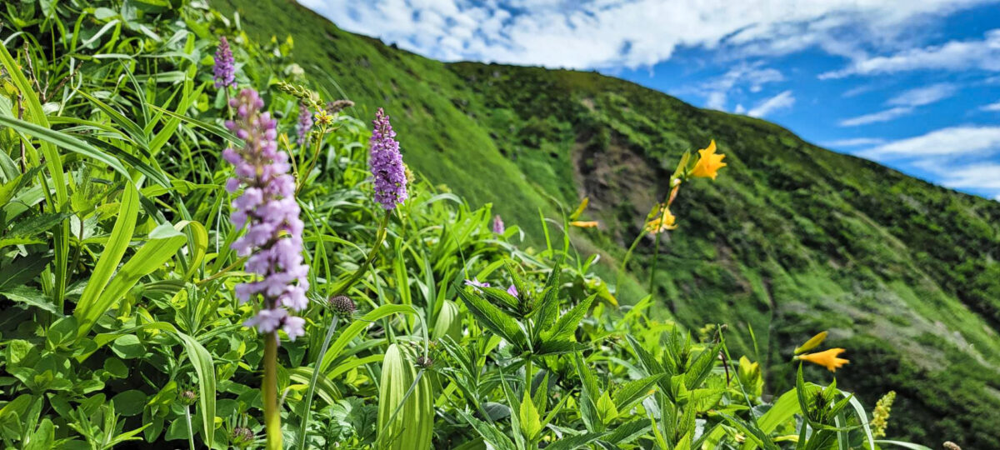
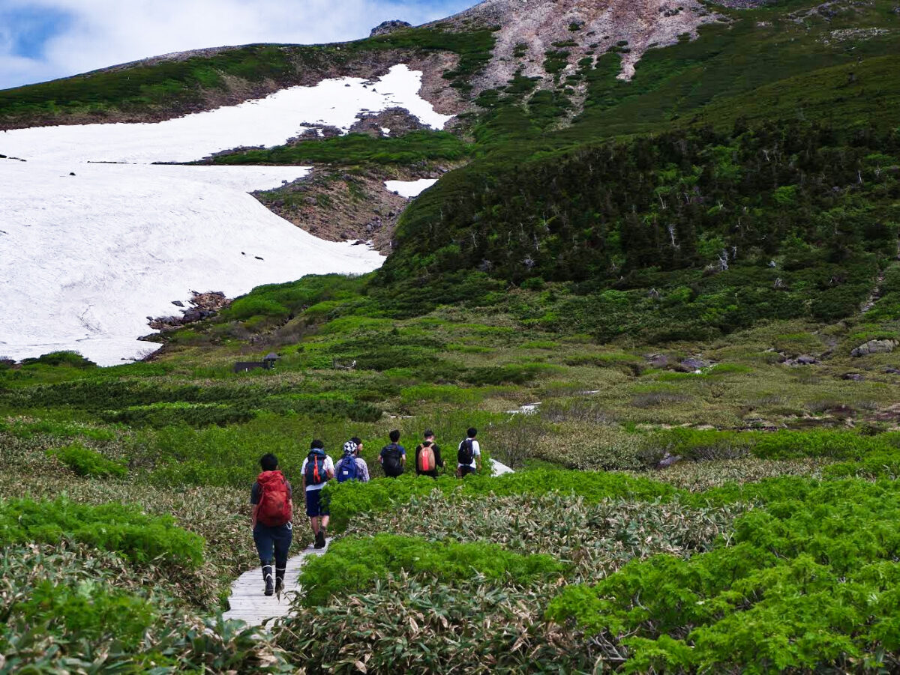
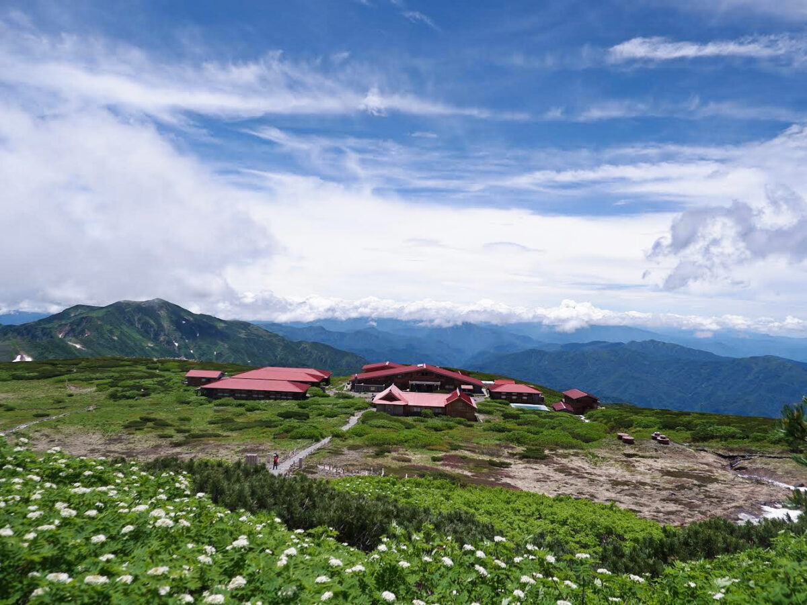

We climbed the Hakusan. The weather was very good and we got a sunburn. It was the my first big climbing and it was very excited. We saw and felt the nature of Hakusan. It was very hot day, but if we Getting to the ridgeline, there was great clear wind and it cooled our skin. There was also some kinds of flower, so we never got tired of it.
There were two climbing road that were "Kankou Shindou" and "Sabou Shindou." "Kankou Shindou" is harder climbing road and we climbed from there. At first it was very steep climb. After we getting to the ridgeline, we saw the great view of Hakusan. There was wonderful natue. The contrast of the nature and blue sky was supreme!
Go to the top of Hakusan from "Murodo."
 